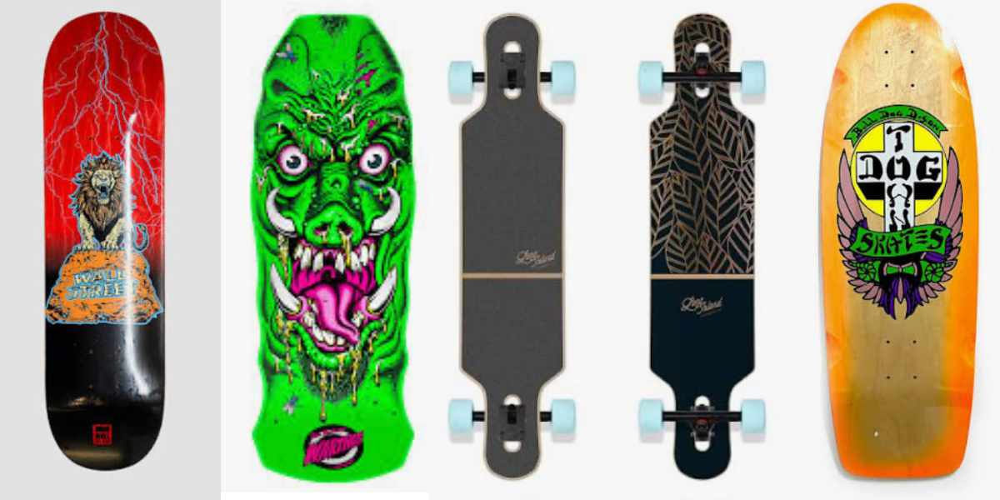
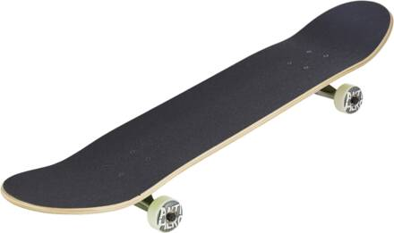
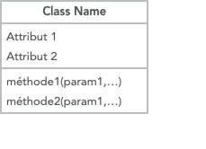

Programmation orientée objet
Cette séquence comprend :
- ce cours sur la POO ;
- une fiche d’exercices : pdf ;
- un TP de transition Fruits et paniers : Lien ;
- le mini-projet Jeu des 7 familles : Lien (sans interface graphique) ;
- un TP sur les trajectoires de projectiles : Lien ;
- un TP sur la programmation d’un jeu de dominos : Lien (sans interface graphique) ;
- une fiche Les bonnes pratiques en POO : Lien.
Programmation objet
Principe
Jusqu’ici, nos programmes manipulaient des données (nombres, chaînes, listes, dictionnaires) d’un côté, et des fonctions qui agissent sur ces données de l’autre.
En programmation orientée objet (POO), on regroupe dans une même structure, appelée objet, des données et les fonctions qui agissent sur ces données. L’idée est de se rapprocher de la façon dont on décrit les objets physiques.
Prenons l’exemple d’une planche de skateboard : elle possède des caractéristiques qui lui sont propres.

quelques exemples montrant la diversité des planches de skates
Malgré leur diversité, toutes les planches sont constituées :
- d’un deck (court, long) ;
- d’un tail (plat, relevé) ;
- de trucks (hauts, bas) ;
- de roues (à gomme tendre, dure) ;
- d’une décoration (l’image sous le deck).
L’ensemble de ces caractéristiques, à un instant donné, constitue l’état de la planche. Cet état peut évoluer : on peut changer les roues, repeindre la déco, la planche s’use…
Une planche peut aussi répondre à des demandes (on dit aussi des messages). Par exemple, on peut lui demander : « es-tu adaptée au skatepark ? ». Elle répond True pour une planche de type street (deck court, tail relevé, roues dures), et False pour une planche de type cruiser.
L’ensemble des demandes auxquelles un objet sait répondre s’appelle son interface : c’est par elle que l’on interagit avec l’objet, et que les objets interagissent entre eux.
Un objet comprend donc :
- des attributs : les données qui décrivent son état ;
- des méthodes : les fonctions qui décrivent son comportement, c’est-à-dire la façon dont il répond aux messages.
Classe et instance
Toutes les planches ont la même structure, seules les valeurs changent. On décrit cette structure commune une seule fois, dans une classe.
- La classe
Skateboardest le plan de fabrication (le moule) : elle indique quels attributs possède une planche, et quelles méthodes elle sait exécuter. - Chaque planche fabriquée à partir de ce plan est un objet, appelé instance de la classe. Créer un objet s’appelle instancier la classe.
On peut fabriquer autant d’instances que l’on veut avec une même classe : chacune possède ses propres valeurs d’attributs.
Définir une classe en Python
Le mot-clé class
La définition d’une classe commence par le mot-clé class, suivi du nom de la classe (par convention avec une majuscule), de deux points et d’un bloc indenté :
Tout le bloc indenté contient les méthodes de la classe.
Le constructeur __init__ et le paramètre self
La méthode __init__, appelée constructeur, est exécutée automatiquement à la création de chaque objet. Son rôle est de créer les attributs de l’objet et de leur donner une valeur initiale.
Toute méthode reçoit comme premier paramètre self, qui désigne l’objet sur lequel elle agit. Les attributs s’écrivent self.nom_attribut : self.deck signifie « le deck de cette planche ».
Remarques :
- Les paramètres ont ici des valeurs par défaut :
Skateboard()crée une planche street classique, sans décoration (None). - Un attribut ne vient pas forcément d’un paramètre. Ici, toute planche neuve a parcouru
0km. - Ne pas confondre le paramètre
deck(une variable locale à__init__, qui disparaît ensuite) et l’attributself.deck(qui reste attaché à l’objet).
Les méthodes
Une méthode se définit comme une fonction, à l’intérieur de la classe, avec self comme premier paramètre. Une méthode peut :
- retourner une information sur l’objet, sans le modifier ;
- modifier l’état de l’objet, c’est-à-dire ses attributs.
Script complet :
skateboard_pour_parc retourne une information, et rouler modifie l’état de la planche.
Créer et utiliser des objets
Instancier
On crée un objet en appelant la classe comme une fonction, sans donner l’argument self :

un premier skateboard bien classique
Python crée un nouvel objet, puis exécute automatiquement __init__ en donnant cet objet comme valeur à self. Les autres arguments sont passés aux paramètres suivants, dans l’ordre :
un skateboard cruiser
Appeler une méthode : la notation pointée
On envoie un message à un objet avec la notation pointée objet.methode(arguments) :
Python traduit mon_sector_9.skateboard_pour_parc() par Skateboard.skateboard_pour_parc(mon_sector_9) : l’objet placé avant le point devient self. C’est pour cela qu’on n’écrit jamais self lors de l’appel.
Accéder aux attributs
La notation pointée permet aussi de lire un attribut :
Chaque instance a ses propres attributs : faire rouler mon_premier_skate ne change pas le compteur de mon_sector_9.
Erreurs classiques
| Erreur | Ce qui se passe |
|---|---|
oublier self dans la définition : def rouler(distance): |
TypeError à l’appel : Python transmet l’objet en plus de l’argument |
écrire deck = deck au lieu de self.deck = deck dans __init__ |
l’attribut n’est pas créé : AttributeError plus tard |
oublier les parenthèses : mon_sector_9.skateboard_pour_parc |
on obtient la méthode elle-même, sans l’exécuter |
utiliser print au lieu de return dans une méthode qui doit renvoyer une valeur |
la méthode renvoie None |
La méthode __repr__
Essayons d’afficher une instance :
Python affiche seulement la classe et l’adresse mémoire de l’objet, ce qui n’est pas très lisible. On peut choisir un affichage personnalisé en écrivant, dans la classe, la méthode spéciale __repr__. Elle doit retourner une chaîne de caractères :
Après avoir recréé l’instance :
Remarques :
- À l’intérieur de la classe, une méthode en appelle une autre avec
self.skateboard_pour_parc(), sans redonnerselfentre les parenthèses. __repr__est utilisée parprint, par la console et pour afficher les éléments d’une liste. Python propose aussi la méthode__str__, utilisée en priorité parprintsi elle existe.- Les méthodes dont le nom est entouré de
__sont des méthodes spéciales : Python les appelle automatiquement dans certaines situations (__init__à la création,__repr__à l’affichage…). Il en existe aussi pour les opérateurs, par exemple__eq__pour==ou__lt__pour<(voir les liens en bas de page).
Des objets qui interagissent
Un objet comme attribut d’un autre objet
Un attribut peut contenir n’importe quelle valeur : un nombre, une liste… ou un autre objet. Définissons une classe Skateur, dont l’attribut planche est un objet Skateboard :
self.planche.skateboard_pour_parc() se lit de gauche à droite : « la planche de ce skateur, à qui on demande si elle est adaptée au parc ». Le skateur délègue la question à sa planche.
On peut de même utiliser un attribut qui contient une liste d’objets : par exemple un magasin dont l’attribut stock est une liste de Skateboard, ou un joueur qui a une liste de cartes en main (voir le mini-projet Jeu des 7 familles).
Variables et objets : attention aux références
Dans l’exemple précédent, lea.session(4) a modifié mon_premier_skate.km. En effet, lea.planche et mon_premier_skate désignent le même objet en mémoire, et non deux copies.
Une variable contient une référence vers l’objet, comme pour les listes. Seul un appel à Skateboard(...) fabrique un nouvel objet.
Encapsulation : getters et setters
Le principe
Pour utiliser un objet, il suffit de connaître son interface (ses méthodes et ce qu’elles font), sans savoir comment il est programmé à l’intérieur. On dit que les attributs sont encapsulés : idéalement, on ne les manipule pas directement, mais à travers des méthodes prévues pour cela.
Avantage : la méthode peut contrôler les modifications. Par exemple, empêcher une distance négative dans rouler, ou un type de roues inconnu.
Lire un attribut : accesseur ou getter
Un accesseur (getter) est une méthode qui retourne la valeur d’un attribut. Son nom commence généralement par get_ :
Modifier un attribut : mutateur ou setter
Un mutateur (setter) est une méthode qui modifie la valeur d’un attribut. Son nom commence généralement par set_ :
Attention : mon_sector_9.set_deco = 'repeinte' ne modifie pas la déco. Cette instruction remplace la méthode set_deco de cet objet par une chaîne de caractères !
En pratique, en Python
Contrairement à d’autres langages comme Java, Python n’empêche pas d’écrire objet.attribut. Par convention, un attribut dont le nom commence par _ (par exemple self._km) signale qu’il ne doit pas être utilisé en dehors de la classe.
Au baccalauréat, les sujets utilisent souvent directement la notation objet.attribut (par exemple carte.famille). Il faut donc savoir lire et écrire les deux formes.
Documenter une classe : le docstring
Une classe se documente par une chaîne placée juste après sa première ligne : le docstring. Il décrit les attributs et les méthodes, c’est-à-dire l’interface de la classe :
On en prend connaissance avec :
Représenter une classe
On représente souvent une classe par un diagramme en trois cases : le nom de la classe, ses attributs, puis ses méthodes.

Une représentation d'une classe
Pour la classe Skateboard :
Skateboard |
|---|
deck, tail, truck, roues, deco, km |
__init__(deck, tail, truck, roues, deco), skateboard_pour_parc(), rouler(distance), get_tail(), set_deco(deco), __repr__() |
L’essentiel
- Une classe décrit un type d’objet. Un objet (ou instance) est fabriqué à partir d’une classe :
planche = Skateboard('long'). - Les attributs (
self.deck) décrivent l’état de l’objet. Les méthodes décrivent son comportement. - Le constructeur
__init__est appelé automatiquement à la création de l’objet : il crée les attributs. selfdésigne l’objet sur lequel agit la méthode. Il est le premier paramètre de chaque méthode, mais on ne l’écrit pas lors de l’appel :planche.rouler(3).- Une méthode peut retourner une information ou modifier l’état de l’objet.
__repr__retourne la chaîne utilisée pour afficher l’objet.- Un attribut peut être un autre objet, ou une liste d’objets : les objets interagissent.
- Une variable contient une référence vers un objet : deux variables peuvent désigner le même objet.
- Les accesseurs (
get_...) et mutateurs (set_...) font l’interface entre l’utilisateur et les attributs : c’est l’encapsulation.
Pour la suite : la POO sert aussi à programmer des structures de données (piles, files, listes chaînées, arbres) : l’interface (les méthodes empiler, depiler…) est séparée de l’implémentation (la manière de stocker les données). Voir le cours sur les listes chaînées.
La suite en TP
- TP de transition Fruits et paniers : Lien
- Mini-projet Jeu des 7 familles : Lien (sans interface graphique)
- TP sur les trajectoires de projectiles : Lien
- TP sur la programmation d’un jeu de dominos : Lien (sans interface graphique)
Liens
- Cours sur python.developpez.com : compléments sur les méthodes spéciales de surcharge des opérateurs, et sur l’héritage et le polymorphisme (hors programme).
- Référence : Classes sur docs.python.org
- Prolongement sur l’héritage et le polymorphisme (hors programme) : Python Doctor, POO pour débutants
- Résumé de cours : Lyceum.fr > POO
- Autres exercices : Lyceum.fr > POO > Exercices